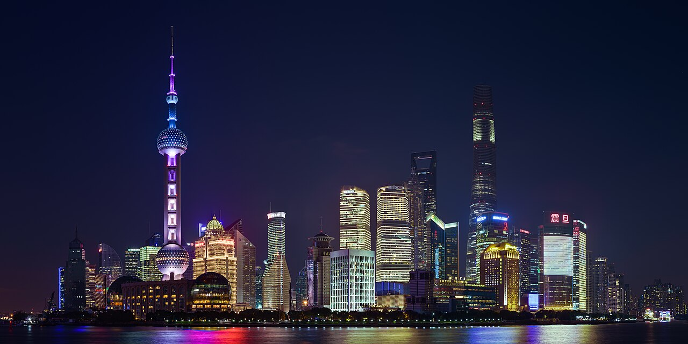

Шанхай
Мегаполіс із футуристичною атмосферою · Китай

Pudong Shanghai November 2017 HDR panorama — King of Hearts, CC BY-SA 4.0, Wikimedia Commons. Зменшена копія; без кадрування та змін змісту.
Коротко про місто
Шанхай приваблює мене образом сучасного мегаполіса. Особливо виразно він відчувається в Луцзяцзуй — фінансовому районі Пудуна, де над річкою Хуанпу піднімаються хмарочоси та телевежа «Східна перлина». [3] [2]
Нічна панорама міста з її підсвіченими висотками нагадує мені футуристичний кіберпанк. Водночас поруч існує інший Шанхай — історична набережна Бунд. Саме поєднання сучасної архітектури з минулим робить місто для мене особливо цікавим. [4]
Чому я обрав це місто
Я обрав Шанхай через його масштаб, сучасну архітектуру й технологічний образ. Його нічний силует відповідає моєму уявленню про футуристичне місто.
Три цікаві факти
Визначні місця
Моя оцінка
У моїй добірці Шанхай вирізняється футуристичним образом. Найбільше я ціную його масштаб, сучасну архітектуру та виразний нічний силует.
Це оцінка за моїми інтересами, а не відгук про туристичну поїздку.
Дізнатися більше
Шанхайська вежа на офіційному порталі міста
Джерела фактів
- Офіційний портал Шанхая: Shanghai Tower
- Офіційний портал Шанхая: Oriental Pearl Tower
- Офіційний портал Шанхая: Lujiazui Financial City
- Офіційний портал Шанхая: The Bund Historical and Cultural Block
Джерела переглянуто 10 листопада 2026 року.